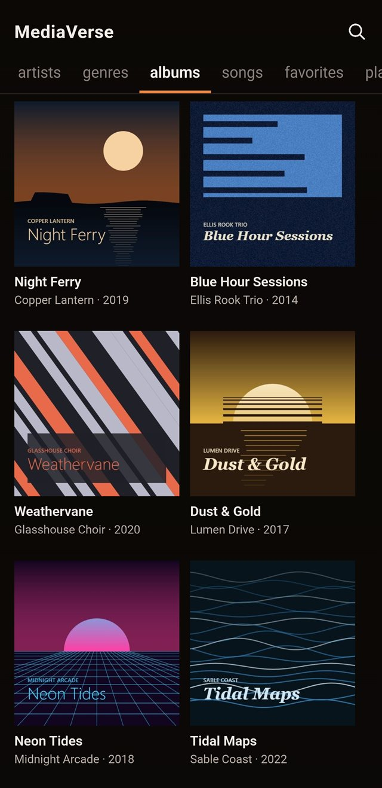
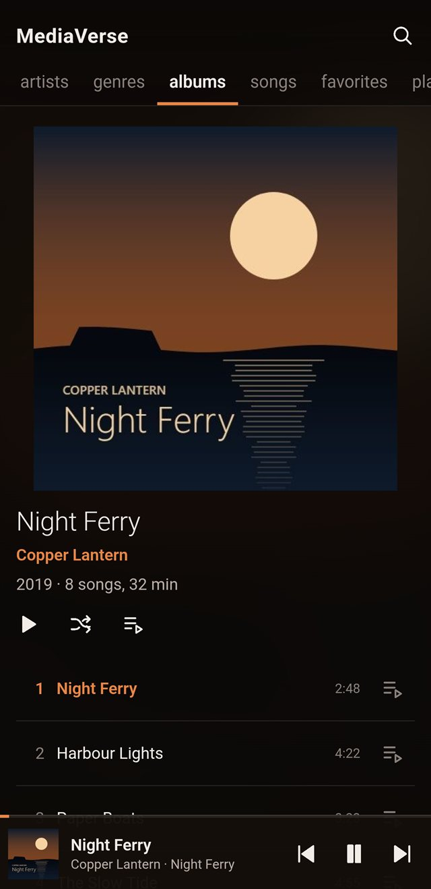
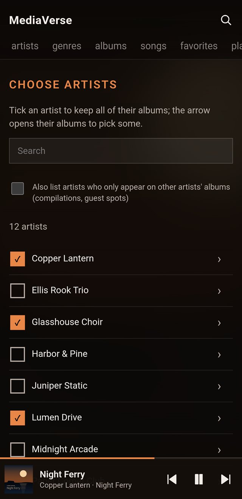

Android
Your music, with you, in step with home.
A player for the music stored on your phone, in the same look as the computer and the TV. Choose what to keep from home, and it plays anywhere: no signal, no buffering, no subscription.
Download the Android appHow syncing works
Public beta 0.9.1 · Android 11 or newer · installed from the .apk (Google Play comes later)

Play
A proper player


- Plays with the screen off, with lock screen and notification controls
- Search, and an A to Z strip on long lists
- Playlists, smart lists and favorites
- Sleep timer and bookmarks inside long songs
- An equalizer that remembers each speaker, headphone and Bluetooth device
- Comes back to the same song and place
- Highlight colors to match your taste
- Flag a song that sounds wrong, to fix at the computer
Drive
Android Auto
Browse artists, albums, genres and songs on the car's screen, search by voice, and control what is playing. Android Auto draws its own screens, so it looks like your car, not like the phone.
Until the app is on Google Play, switch on Unknown sources in Android Auto's developer settings (open Android Auto's settings, tap the version ten times, then Developer settings) so the car will list it.
Sync
Keep what you choose, from your computer or your server
Pair with MediaVerse Studio on your computer over Wi-Fi new, or sign in to your Jellyfin server with a code. Both work on your home network only.


Edits come down
Fix a tag, cover or lyric at home and the next sync brings the new version to the phone.
Both ways
Favorites, flags and playlists stay in step between the phone and home.
Careful with your music
Songs go into the phone's Music folder. Music already there is recognized and not downloaded twice. The app removes only songs it added, and replaces your own copies only if you switch that on and allow it.
Send new music home
Albums you bought on the phone can be sent to your computer's incoming folder. new Sending to a Jellyfin server needs our plugin, which is still a test version.
Wi-Fi sync with a computer is new in 0.9.1 and has had little use on real phones. A phone pairs with one computer at a time, and the computer program must be open.
Share
Play it out loud
On the TV
With the TV app playing from your phone's library, send it the queue and the phone becomes the remote; bring the music back to the same spot.
Chromecast and speakers
Cast to Google Cast devices and DLNA TVs and speakers on your home Wi-Fi. in testing
Phone as the library
Switch on sharing and a paired TV can browse and play the music on the phone.
Profiles
On a Jellyfin server, each person on a shared phone can have their own favorites, playlists and play counts. new
Installing it
Download the .apk, open it on the phone, and allow "install unknown apps" for the app you opened it from. Updating from 0.9.0 keeps your data. It asks for access to your music, to pictures (for album covers kept in your music folders), to notifications and to devices on your local network. See Privacy.